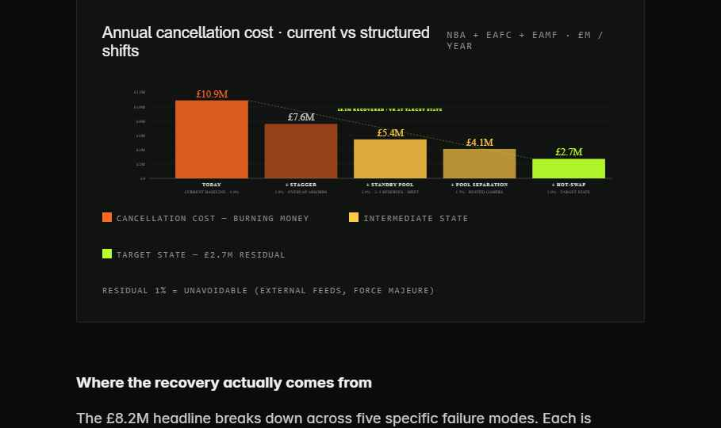

Live animation unavailable · static preview

The animated reliability ladder couldn't load (local bundle failed). Shown is the reference waterfall frame from the Shift Structure deck. See pyramid-scene.jsx + sim-data.jsx in the project folder for the full 24‑gamer sample simulation.